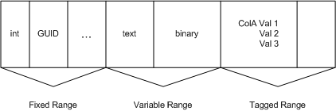

Applies to: Windows | Windows Server
The values in a multi-valued column are identified by an index number called the itagSequence. This number is a reference to a single value of the column. This number is used when new values are set, retrieved, or enumerated in the column. The itagSequence is used in various structures, including:
This itagSequence starts at 1 for every value in the multi-valued column. The sequence number is increased when new values are added to the column. Setting a value in a column with an itagSequence of 0 indicates that the value is to be appended to the set of values already in that column. Using an itagSequence greater than the number of values currently set for a column will have the same effect. Specifying the itagSequence of an existing value will overwrite that value, not insert a new one. Setting an existing value to NULL will remove that value from the set of values already in that column. This will move all the subsequent values in the column down by one slot such that subsequent access to those values by itagSequence will be by a number one less than what was previously used.
The following diagram shows an itagSequence in a multi-valued column. The column named ColA has three entries: Val1, Val2 and Val3 with itagSequence of 1, 2, and 3 respectively.
